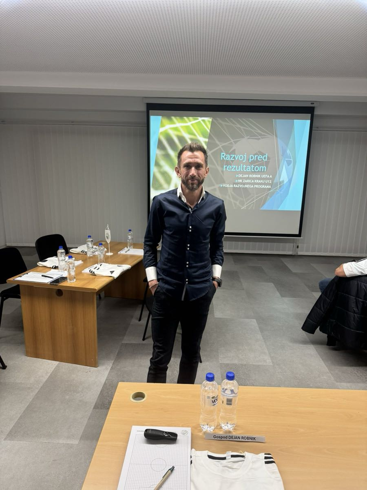
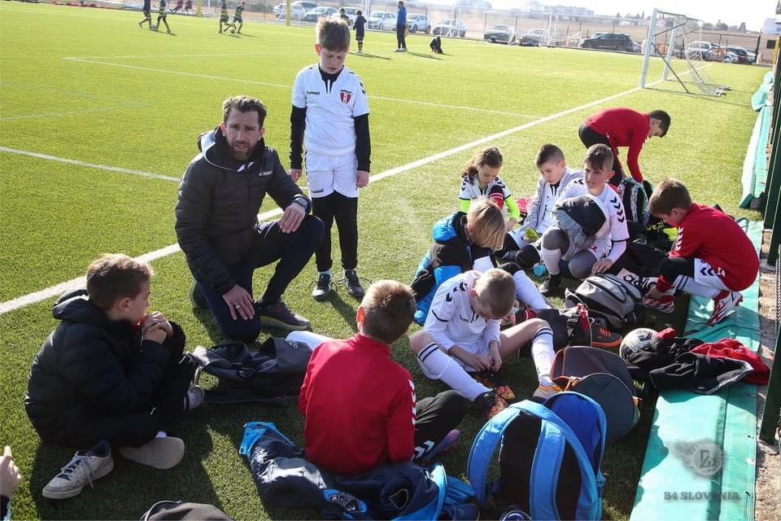

Dejan Robnik je trener in vodja stroke v NK Kranj in je že vrsto let tesno vpet v razvoj mladinskega nogometa. Pri svojem delu tesno sodeluje s strokovnimi strukturami NZS, razvoj igralcev pa razume celostno , kot kombinacijo nogometnega znanja, osebnostne rasti in stabilnega okolja. Poleg trenerskega dela je še vedno aktiven igralec, kar mu daje neposreden stik z realnostjo igrišča in slačilnice. Velja za ambicioznega, studioznega strokovnjaka, ki se ne zadovolji z bližnjicami in pri razvoju mladih zagovarja dolgoročen, potrpežljiv in odgovoren pristop.
Če pogledate realno stanje: ali slovenski mladinski nogomet danes bolj ogrožajo omejitve otrok ali nerealne ambicije njihovih staršev?
Otroci so dandanes nenehno pod prevelikim pritiskom rezultatskega uspeha. Bodisi s strani trenerjev ali staršev. V našem klubu želimo delovati razvojno in sem mnenja, da nepotreben pritisk na lastne otroke v največji meri žal ustvarjajo starši. Določen del staršev je precej nerealen pri oceni svojega otroka z vidika nogometnega znanja.
Bi se strinjali s trditvijo, da veliko staršev svojega otroka vidi kot bodočega profesionalca, še preden vidi, ali je otrok sploh srečen v nogometu?
Ja, srž problema je, ker starši otroke že ob prvem dotiku vidijo kot uspešne profesionalne nogometaše. Zelo hitro pozabijo zakaj je pomembno, da se otrok ukvarja s športom.
Zakaj je prepričanje, da bo prestop v “večji klub” pri rosno mladih avtomatsko pomenil boljši razvoj, po vašem mnenju nevarna iluzija?
Zato, ker določeni trenerji še vedno prodajajo poceni zgodbe o uspehu in ker jim ni mar za otroka, temveč samo za lasten trenerski CV. Lotevajo se prijemov, ki so zelo nevarni in škodljivi na otrokovi razvojni poti.
Kaj se v praksi najpogosteje zgodi z otroki, ki zapustijo stabilno okolje zaradi obljub hitrega napredka in ‘posebne obravnave’?
Žal vidimo, da določeni klubi ravno zaradi teh poceni obljub večjih klubov težko sestavljajo ekipe. Naši otroci pa po večini v klubih kjer obljubljajo ves ta razvojni bum predstavljajo le številko. Če ne hipoma, se to pokaže kaj kmalu. To se kaže v igralnih minutah, na tekmah seveda. Otroci težko sprejmejo to realnost in pogosto prenehajo z nogometom.
Zakaj se po razočaranju ali zavrnitvi v “večjem klubu” veliko mladih nogometašev ne vrne v matični klub, ampak raje tava od kluba do kluba ali celo povsem obupa nad nogometom? Kolikšno vlogo ima pri tem sram?
Starši ne vede otroka postavijo v položaj iz katerega se pri rosnih letih ne znajo izviti. Za vsakega otroka pomeni to poraz in ne korak nazaj zaradi dveh naprej.
Otroci enostavno niso tako zreli, da bi sami lahko ocenili situacijo. Starši pa namesto, da otroku pomagajo z nasveti rajši otroka vozijo od kluba do kluba dokler razočaranje ni tako veliko, da se zgodba konča. In teh zgodb je na žalost vedno več.
Sram bi lahko bilo le staršev, ki pogosto zaradi svojih nerealnih ambicij preprečijo, da se otrok nadaljnje razvija v zdravem njemu primernem okolju.
Ali se vam zdi, da otroci po prezgodnjih prestopih pogosto nimajo več kam “nazaj” – ne zato, ker vrata ne bi bila odprta, ampak ker jih je strah priznati, da bližnjica ni delovala?
Predvsem starši so tisti, ki bi si morali priznati napako in ne otroci. Večina prestopov otrok je izsiljenih iz strani staršev. To je dejstvo.
Ali si upate jasno reči, da so nekateri starši danes večja ovira razvoju mladih nogometašev kot slaba infrastruktura ali pomanjkanje pogojev?
Starši so tisti, ki v največji meri vplivajo na otrokovo počutje in imajo odločilno vlogo pri tem ali predstavljajo oviro ali vzpodbudo. So lahko največja prednost ali največja ovira. Pošteno in nujno je priznati, da je infrastruktura pomembna, a odnos staršev je odločilen.
Brez zavedanja svoje vloge lahko starš nehote povzroči več škode kot slabi pogoji, ki jih je vsaj mogoče sčasoma izboljšati. Igralec lahko trenira na slabšem igrišču , a če se počuti varnega, sprejetega in podprtega, bo napredoval. Obratno pa stalni pritisk, kritika ali primerjanje doma in na mestih “sproščenega” druženja, hitro ubijejo veselje in samozavest.
Kako pogosto pri svojem delu srečate otroke, ki ne igrajo več zase, ampak zato, ker doma ne smejo razočarati?
Čuti se pritisk, ki ga ustvarjajo starši. Tudi sam sem starš. Še več, sem starš in trener, ki ima v ekipi svojega otroka in sem že na lastni koži občutil kako hitro lahko nehote ustvarjam pritisk na svojega sina. Starši bi morali biti popolna vzpodbuda in se niti najmanj ne bi smeli pogovarjati z otrokom o strokovnem delu nogometa. Edino vprašanje z njihove strani bi moralo biti: Ali si srečen, zadovoljen?

Zakaj se v javnosti skoraj nikoli ne govori o psiholoških posledicah prezgodnjih prestopov, čeprav stroka vidi, da so te posledice resne in dolgotrajne?
Mislim, da se klubi in trenerji bojijo, da bi sprožili vojno s starši. Rajši se iščejo bližnjice, da bi se najbolje počutili starši in ne otroci. Na koncu je vedno kriv trener, v očeh staršev seveda. Na tem področju se dogajajo nekatere zadeve, ampak sam vidim rešitev, da bi se tovrstna tematika lahko bolj medijsko izpostavila. Ne pa, da se izpostavlja govorjenje o tem kakšen super avtomobil so si privoščili največji nogometni zvezdniki.
Kako bi z eno mislijo opisali razliko med klubom, ki otroka razvija dolgoročno, in klubom ali trenerjem, ki staršem prodaja sanje in bližnjice?
Klub z jasno vizijo in načrtom je predpogoj za uspešnost. Razlika je v fokusu: razvojni klub gradi otroka korak za korakom, medtem ko “prodajalec lepih zgodb oziroma sanj” prodaja občutek hitrega uspeha. Prvi dela v korist otroka čez leta, drugi v korist miru staršev danes.
Razvojni klub bo mladostniku razložil kaj mora izboljšati v npr. naslednjih dveh letih. Klub, ki prodaja sanje, bo staršem istega igralca obljubil, da je že skoraj tam. Brez jasnega načrta, kaj to pomeni in kako do tja priti.
Če zaključim v enem stavku, razvojni klub gradi prihodnost otroka, klub brez vizije pa trži upanje staršev.
Kaj bi danes brez olepševanja povedali trenerjem in klubom, ki staršem 12, 13 in 14 letnikov obljubljajo velike kariere?
Povsem enostavno. Zazrejo naj se v ogledalo in se vprašajo ali so res otroci-nogometaši na prvem mestu ali je to njihov lastni interes in si iskreno odgovorijo. Če otrok res stoji na prvem mestu, potem pri teh letih ni prostora za velike obljube.
Naj bo v ospredju jasna vizija, potrpežljivo delo in odgovornost. Vse drugo ni razvoj, ampak trgovanje z otroškimi sanjami. Trenerjem in klubom, ki pri teh letih obljubljajo velike kariere je treba brez olepševanja povedati: nehajte zavajati starše in ogrožati otroke, ker je to nepošteno in nestrokovno.
Če morate izbrati en glavni razlog, zakaj toliko mladih nogometašev izgine do 16. ali 17. leta: je to slab sistem ali pritisk okolja doma?
Seveda moramo biti pošteni, tudi naše delo in delovanje klubov ima ogromno rezerve a dejstvo je, da je pritisk, ki ga ne zavedajoč se ustvarjajo starši, po večini poguben za nadaljevanje športne poti. Priča smo izgubi veselja, igralci postanejo pasivni ali se umaknejo. Tu so še pasti, ki ga samo po sebi prinaša odraščanje.
Nogomet v tem času ni več le igra, ampak mladostnik postane del tega. Če v tem obdobju nima varnega okolja, kjer sme nihati, dvomiti in rasti v svojem tempu, ga nogomet prej ali slej izgubi.
Kakšno je vaše neposredno sporočilo staršem in trenerjem, ki ob branju tega intervjuja mislijo, da govorite o vseh drugih, ne pa o njih samih?
Ne obljubljajte tistega za kar niste prepričani, da lahko zagotovite. Verjemite v svoje dobro delo in se osredotočite na to, da je nogomet lahko veliko več kot le najlepša igra. Mladostnikom bodite vzor, ker jim lahko v marsičem pomagate ostati na pravi poti v odraslost. Na tej se učijo, kako ravnati v življenju, ne le v športu. Če res verjamete, da delate dobro, potem si upajte biti iskreni, zmerni in potrpežljivi.
Dejan, Hvala!
Na koncu dodajamo, da v klubu ne zagovarjamo hitrih bližnjic, prezgodnjih prestopov in odločitev, ki temeljijo na pritisku odraslih namesto na dobrobiti otroka. Razvoj ni tekma na čas. Razvoj je proces, ki zahteva potrpežljivost, stabilno okolje in zaupanje. Strokovni kader pod vodstvom Robnik Dejana dela z otroki celostno, to je nogometno, vzgojno in osebnostno. V sodelovanju s šolami ustvarjamo okolje, kjer otrok najprej zraste kot človek, šele potem kot nogometaš. Tak pristop ni najhitrejši, je pa edini vzdržen.
Starše vabimo k sodelovanju, ne k tekmovanju. K pogovoru, ne k pritisku. K zaupanju v proces, ne k iskanju instant rešitev. Odločitev je vedno vaša, odgovornost za dobrobit otroka pa skupna. Vrata kluba so odprta vsem, ki verjamejo v delo, pripadnost in dolgoročni razvoj. Pri tem ne bomo popuščali.
NK Kranj